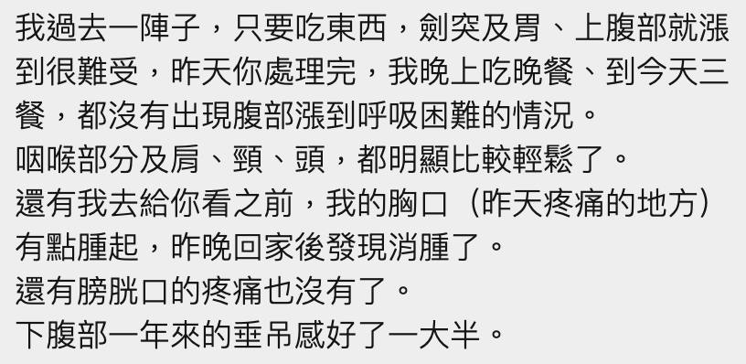

中醫艾灸 ╳ 內臟鬆動術：雙管齊下，從「功能溫通」到「空間釋放」解開頑固胃脹
【 中醫艾灸 ╳ 內臟鬆動術：雙管齊下，從「功能溫通」到「空間釋放」解開頑固胃脹 】
「醫師，我喉嚨一直覺得有東西梗住，肚子脹到晚上根本沒辦法好好睡覺……」
這週診間來了一位熟識的老患者。她先前因咽喉異物感與胃部脹悶，就醫診斷為胃食道逆流（GERD）。然而在完成常規的制酸劑藥物療程後，雖然胃酸逆流的狀況受到控制，但「胃腸悶脹感」與「食慾低落」的症狀卻依然存在，甚至影響了睡眠與排尿的順暢感（也已排除泌尿道感染）。
在臨床上，這類情況並不少見。當常規的生化藥物排除了急性發炎與潰瘍，患者依然感到極度不適時，往往提示著我們：問題可能不僅僅在於「胃酸分泌」，更包含了消化系統的「整體蠕動功能」與「周邊結構張力」。
🔍 跨領域的臨床啟發：從大腸鏡視野到筋膜張力
上週日的 肌筋膜脈學中醫應用 中西醫線上讀書會，講師施醫師透過大腸鏡的操作視角，毫無保留地分享了腸道在體內的纏繞與摺疊狀態。這份來自內視鏡的立體視覺，恰好與我兩週前學習到的布拉格學院「內臟鬆動術 (Visceral Manipulation)」產生了高度的學理共鳴。
西醫解剖學上的空間結構受限，與中醫理論中的氣機阻滯、水濕停聚，我個人認為在某種程度上是同一件事的兩面。面對這類頑固的腸胃症狀，若能將「中醫內科的氣機調節」與「西方骨病醫學徒手的張力釋放」雙管齊下，將能提供患者更完整的照護。
🔄 雙管齊下的臨床實踐：溫度與空間的雙效調節
經過脈診與腹診的交互評估，患者的狀態屬於中醫典型「中焦虛寒、水氣阻滯於心下」的範疇。腸胃蠕動無力，大腹水氣脹滿，導致氣機與水分停滯。
為了解決功能與結構的問題，我決定把中醫針灸與徒手結合起來使用，啟動了雙管齊下的治療模式：
第一步：功能喚醒－中醫五柱灸與針刺引導
在東門中醫的獨立灸室中，以「五柱灸」（以肚臍為中心的溫罐薰臍）作為主要治療手段，並搭配脾經血海與董氏下三皇穴位的針刺。
【臨床目的】 艾灸能透過穩定的熱效應，改善腹部腸胃微循環，溫通偏寒、偏虛弱的中焦腸胃；針刺則啟動脾經、協助引導停滯的氣血下行。治療剛結束，患者原本疲倦渙散的眼神便明顯聚焦，精神狀態有了初步的提振。
第二步：結構釋放－內臟鬆動術的精準介入
在底層循環改善後，隨即針對橫膈膜、胃部與心下區域，施作輕柔的徒手內臟鬆動術。
【臨床目的】 胃食道逆流與脹氣，常伴隨橫膈膜與周邊筋膜、內臟韌帶的過度緊繃與攣縮。透過徒手手法釋放臟器周圍的異常張力，能恢復筋膜應有的滑動性與釋放內臟原有的空間。
當手法一介入，患者的腸胃隨即開始蠕動，胃部傳出明顯的水聲，手下原本緊繃撐脹的胃部區域也隨之柔軟。最讓患者驚訝的是，隨著橫膈張力的下降，咽喉那種「卡卡的梗塞感」也當場消退了大半。
👨⚕️ 醫師的臨床筆記
這是一次極具啟發性的看診經驗。
常規的西醫檢查與藥物，是我們排除危險病灶與控制急性症狀的重要防線。而在此基礎上，中醫的「五柱灸」提供了功能上的溫通，徒手領域的「內臟鬆動術」則解除了實體空間上的筋膜受限。
秉持著「內外互參，手針並施」的理念，將艾灸與徒手雙管齊下，不僅能突破單一療法的盲區，更能精準且溫和地引導身體找回原本的平衡。看著患者終於能放下焦慮、輕鬆呼吸的神情，這正是持續跨領域進修最大的價值所在。
#胃食道逆流 #功能性消化不良 #梅核氣 #五柱灸 #艾灸 #內臟鬆動術 #肌筋膜 #徒手治療 #中西醫結合 #全人診療 #內外互參
東門中醫 太初中醫診所
中醫師 黃彥鈞
📚 實證醫學參考文獻 (References)：
Zheng, H., et al. (2014). Effectiveness of moxibustion treatment for functional dyspepsia: a systematic review and meta-analysis. Evidence-Based Complementary and Alternative Medicine.
(系統性回顧指出：艾灸療法能透過熱刺激調節自律神經與局部微循環，對於改善功能性消化不良引發的胃脹、早飽等症狀具備臨床實證意義。)
Eguaras, N., et al. (2019). Effects of Osteopathic Visceral Treatment in Patients with Gastroesophageal Reflux: A Randomized Controlled Trial. Journal of Clinical Medicine.
(隨機對照試驗顯示：針對橫膈膜與胃食道交界處施作內臟鬆動與筋膜釋放，能有效調節周邊張力，並顯著減輕患者的胃酸逆流頻率與吞嚥異物感。)
【 ⚠️ 醫療免責聲明與就醫提醒 】
本文分享之臨床案例已進行去識別化與隱私保護處理。腸胃悶脹與咽喉異物感之成因繁多，可能涉及消化道器質性病變或其他系統性疾病。若有相關症狀，請務必尋求受過正規訓練之專業醫師，進行完整理學與影像學之鑑別診斷。治療計畫與成效因個人體質而異，請與您的主治醫師進行充分討論。
此外，針刺與艾灸屬於具備特定適應症與風險之專業醫療處置，非具備合法資格之醫療人員請勿自行操作，以免造成燙傷、感染或結構損傷。
